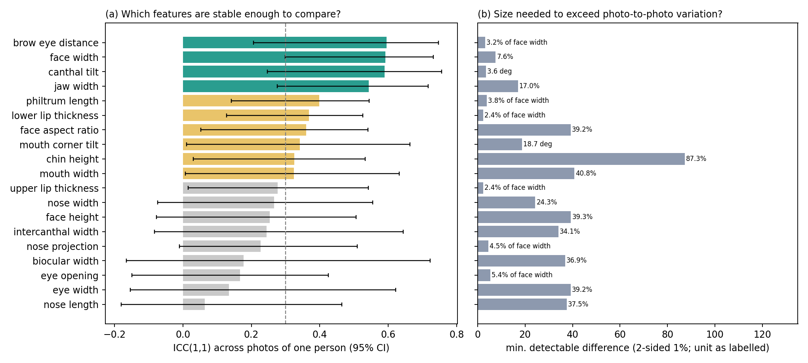

Match
Click a point on one image and see where it lands on the other, with confidence and PCA feature maps alongside.
GECO matches keypoints between two different images of the same kind of thing, using DINOv2 features and confidence-weighted optimal transport. When a match can’t be trusted, it abstains, and it can tell you how far to trust the ones it makes.
Illustration only. The correspondences are hand-placed to show the idea, not output from the model. The real thing runs in the web app.
Each image becomes a grid of patch descriptors. Standard pipelines force every patch onto something. GECO adds a per-patch confidence signal so weak patches can step aside.
DINOv2 ViT-B/14 patch features, pooled across layers 2, 5, 8 and 11 so fine detail and global shape both count.
Each patch gets a confidence value from entropy (v1) or distance from the mean (v2). An eye scores high. Plain sky scores low.
Sinkhorn optimal transport spreads source patches over the target patches they resemble, using confidence-aware marginals.
A pixel on the source becomes a pixel on the target, or a clear “no match” when nothing earns it.
Distinctive patches carry more mass in the transport plan than generic ones, so the match is anchored by the parts that matter.
Every patch has its own “no match” threshold. Low-confidence patches can drop out instead of being pushed onto a wrong spot.
Cosine similarity is scaled by confidence before matching, so trustworthy pairs look cheaper than doubtful ones.
The correspondence core powers two applications, a research finding about uncertainty, and a face module. All of them are in the web app.
Click a point on one image and see where it lands on the other, with confidence and PCA feature maps alongside.
Label a few seed images by hand, then auto-label a large pool. Confidence, cycle consistency and RANSAC geometric checks filter out bad transfers.
Reference-based defect detection. A hybrid of deep and classical scoring compares a test image against one or more golden references.
Zero-training uncertainty from disagreement between independently trained backbones: DINOv2, DINOv1 and DINOv3. When the models disagree about where a point goes, the match deserves less trust.
Identity verification with a frozen DINOv2 backbone and an ArcFace projection head, plus multi-view 3D face meshes that flag the angles they have not seen.
Every figure on this page comes from files in the repository. Where a result is modest or a study is small, the page says so.
On all 18 SPair-71k categories, each signal is scored by the accuracy gap between the most and least trusted thirds of its predictions. Larger is better.
Agreement is strictly better in 12 categories, tied in sheep, and weaker in bicycle, cow, person, potted plant and train. The baseline here is the best of three models chosen per category, which is a demanding comparison.
DINOv2 alone averages 0.132 and goes negative on one category (person). Agreement is never negative.
500-pair held-out protocol, decision threshold 0.30.
249 of 250 matching pairs and 248 of 250 non-matching pairs correct. Frozen DINOv2 ViT-B/14, 128-d embedding.

The 3D face-difference work measures 19 facial features and only calls a difference real if it exceeds a person’s own photo-to-photo variation.
The first request downloads DINOv2 ViT-B/14 weights (about 330 MB) and caches them. A GPU helps, and the pipeline falls back to CPU or Apple silicon automatically.
git clone https://github.com/darayavahoush/geco.git cd geco python -m venv .venv && source .venv/bin/activate pip install -e . pip install -r backend/requirements.txt uvicorn backend.main:app --reload --port 8000
cd geco/frontend cp .env.example .env npm install npm run dev
.venv\Scripts\activate.docker compose up --build
deploy.resources block in docker-compose.yml (needs the NVIDIA Container Toolkit).Interactive API docs are served at /docs by FastAPI when the backend is running.
| Name | Range | Effect |
|---|---|---|
alpha | 0 to 1 | Blends uniform marginals with confidence-weighted ones. At 0 every patch counts equally. |
z_base | cost | Baseline “no match” cost for a maximally confident patch. |
z_range | cost | How far a low-confidence patch’s dustbin threshold drops, making it easier to reject. |
reg | > 0 | Sinkhorn entropic regularization. Lower is sharper but slower to converge. |
| Endpoint | Description |
|---|---|
GET/health | Liveness, model and device status. |
POST/api/match | Upload src_image, trg_image and parameters. Returns confidence and PCA maps plus a session_id. |
POST/api/keypoint | Send session_id, pixel_x, pixel_y. Returns the matched pixel on the target. |
GET/api/match-heatmap/{id} | Debug view of the full transport heatmap for one source patch. |
POST/api/propagate | Propagate seed keypoints onto a target image with verification. |
POST/api/anomaly | Score a test image against reference images. |
POST/api/cross-model-match | Match with several backbones and report their disagreement. |
POST/api/verify-face | Same-person verdict for two face photos, with cosine similarity. |
POST/api/verify-face-3d | Multi-view comparison fusing embeddings with 3D structure. |
POST/api/enroll · /api/identify | Enroll a face into a gallery, then identify against it. |
main.py)train/, eval/, data/ and download_datasets.sh for PF-PASCAL, SPair-71k and CUB-200-2011